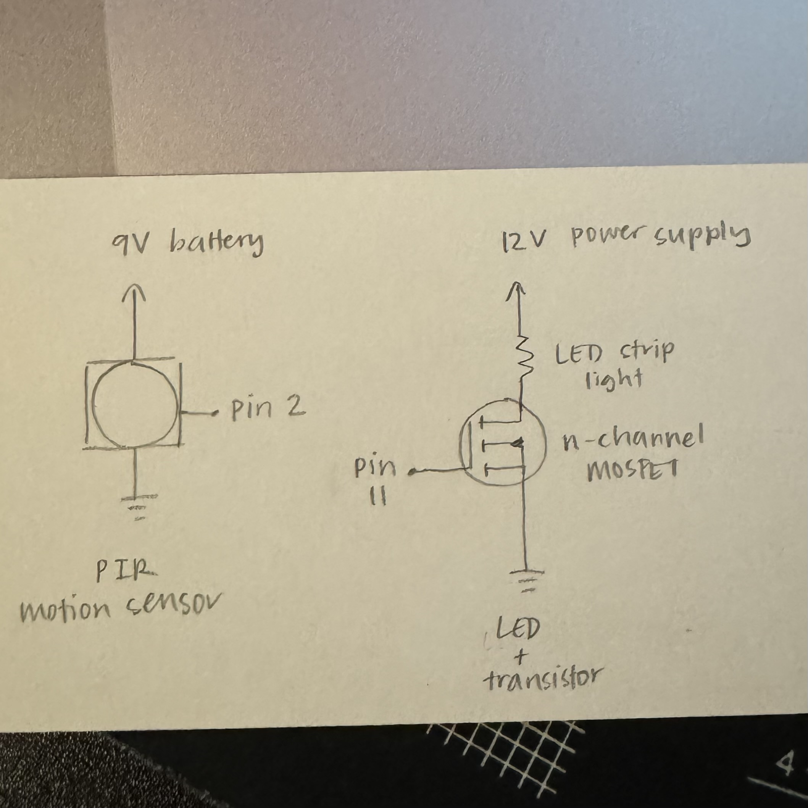

The final project allowed us to integrate the various skills
we learned in this course into an actual prototype. For my final
project, I wanted to incorporate a device that I enjoyed using
and would realistically use in my daily life. On the other hand,
I wanted to round out my last assignment by using a device that
I wasn't too familiar with.
That being said, my final project is a smart mirror that fades
on its LEDs when you approach it. It uses a PIR motion
sensor as an input device (which I wasn't the most familiar
with, at first) and the LED strip light (which I enojoyed using in
A5) as an output device. When you approach the mirror, the LED light
strip behind the mirror's frame with fade ON, and will remain lit.
The mirror's LED will then fade off after 20 seconds of not
detecting any motion. The idea is that if I were doing my skin/hair care
in front of my mirror and need to grab products outside of the mirror's
field of vision, I wouldn't want the LED to blink on and off constantly.
I also wanted to make the lights fade instead of blink to make the
experience more pleasant.
Circuit
On the left is a photo of my circuit before placing it into its
enclosure. Additionally, here is a list of the materials I used for
this project:
1. PIR Motion Sensor
2. 12V LED Strip Light
3. 12V Power Supply Adapter
4. N-Channel MOSFET Transistor
5. 9V Battery
6. Arduino UNO
7. Breadboard
8. Wires & Alligator Clips
9. Electrical Tape
Enclsoure
This is what my circuit looks like inside of its enclosure.
The box I used was an empty Ziplock box (not sponsored), and
I took advantage of the box's openings to fit my breadboard inside.
It was the perfect fit height and width wise, however, I had to
ensure that no metal objects were going to be touching each other
by taping everything down with electrical tape. This was before I
plugged in my battery, but it would fit on the right side of the box
where it would be plugged into the Arduino.
Technical Implementation

On the left is the schematic that represents my final project.
The PIR motion sensor is connected to pin 2 on my Arduino, and
sends a signal whenever it detects motion. This signal is
received by the Arduino, then switches on the transistor's gate,
which is connected to pin 11. This then allows current to flow from
the 12V power supply through the LED light strip, turning on its
lights. After 20 seconds of no motion detected, the transistor's gate
is switched off and the LED strip light will turn off.
The 9V battery is connected and powers the Arduino instead of
the typical 5V I've been using in my previous assignments. This is
to assure that my circuit can work independently from the laptop,
and the circuit can be mobile.
Code
const int pirPin = 2; /* assigns the PIR motion sensor to pin 2 */
const int ledPin = 11; /* assigns the LED to pin 11 */
bool fadingON = true; /* denotes that the LED is fading on */
bool fadingOFF = false; /* denotes that the LED is fading off */
long startTime = 0; /* represents the start time of the LED being on */
long currentTime = 0; /* represents how much time the LED has been on */
void setup() {
Serial.begin(9600); /* begins serial communication */
pinMode(pirPin, INPUT); /* sets the PIR motion sensor to input */
pinMode(ledPin, OUTPUT); /* sets the LED pin to output */
}
void loop() {
/* current time that the program is run in this loop */
currentTime = millis();
/* checks if the PIR motion sensor reads any motion */
if (digitalRead(pirPin) == HIGH && !fadingON) {
fadingOFF = false; /* sets the LED fading off to false */
startTime = millis(); /* initializes the start time of the LED being on */
/* fades the LED on with a 10ms delay */
for (int brightness = 0; brightness <= 255; brightness++) {
fadingON = true; /* sets the LED to fading on to true */
analogWrite(ledPin, brightness);
delay(10);
}
fadingON = false; /* sets the LED to finding on to false */
/* LED remains on at brightest setting once it finishes fading on */
analogWrite(ledPin, 255);
} else if (digitalRead(pirPin) == LOW) {
/* indicates that the fading is over */
fadingON = false;
/* checks if the LED has been on for at least 20 seconds and
the LED isn't already fading out */
if (currentTime - startTime >= 20000 && !fadingOFF) {
/* indicates that the LED will fade off */
fadingOFF = true;
/* fades the LED off with a 10ms delay */
for (int brightness = 255; brightness >= 0; brightness--) {
analogWrite(ledPin, brightness);
delay(10);
}
}
}
}